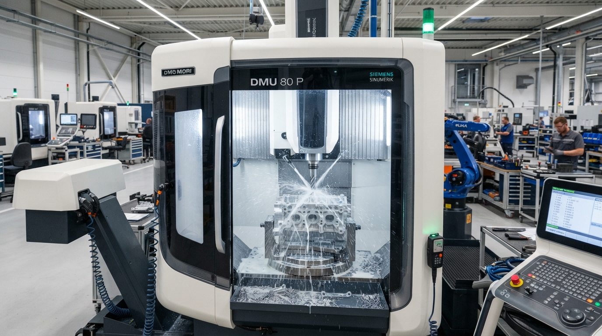
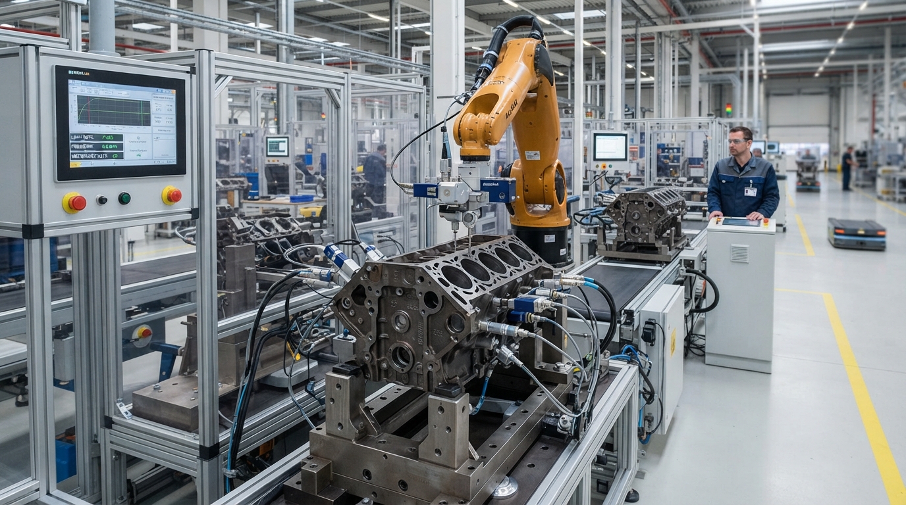
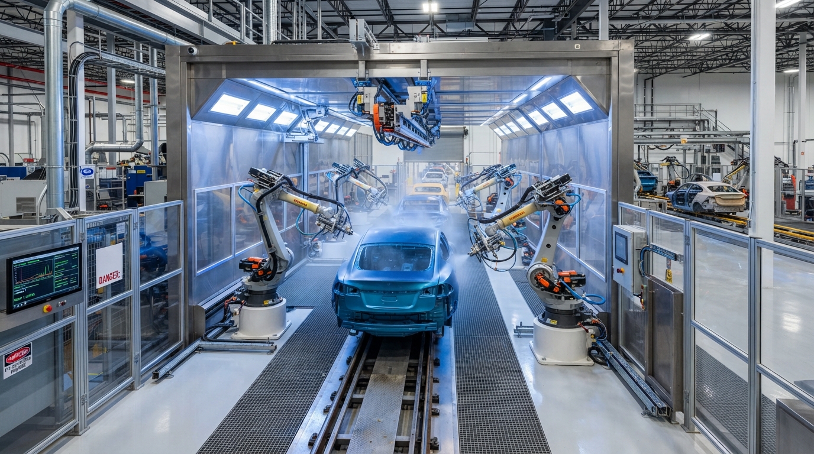
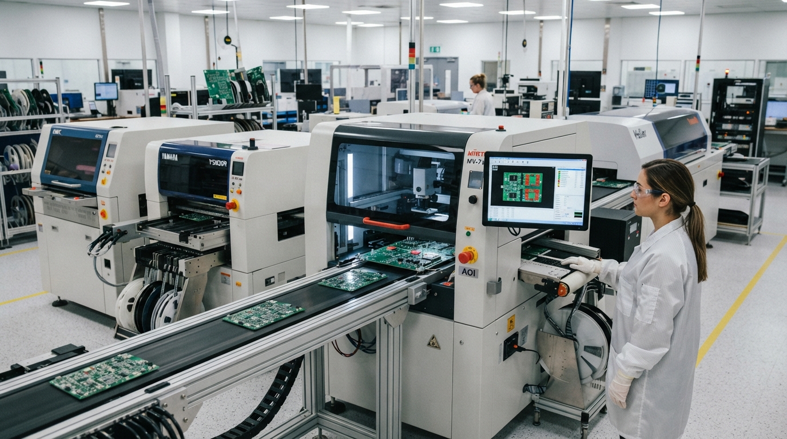

Consulting Engagements & Core Industrial Deliverables
Engineered specifically for Tier-1 automotive and precision discrete manufacturers across Pune, Gujarat, NCR, and Southern auto corridors. Delivering audited system compliance, PPM crash programs, and measurable shop-floor yield gains.
IATF 16949 Implementation & Strengthening
Turnkey readiness roadmap from gap analysis to stage-2 registrar audit clearance for Tier-1 & Tier-2 automotive component suppliers.
- check_circle Clause-by-clause gap diagnostic & time-bound readiness plan
- check_circle CSR (Customer Specific Requirements) deployment matrix
- check_circle Level 1-4 Quality Management manual & SOP engineering
QMS Implementation & Process Improvement
ISO 9001:2015, ISO 14001, and ISO 45001 Integrated Management System (IMS) setup tailored to discrete engineering and process manufacturers.
- check_circle Value Stream & Turtle diagram process interaction mapping
- check_circle Risk & Opportunity assessment matrix (Clause 6.1)
- check_circle IMS alignment eliminating duplicate procedural documentation
ISO / IATF Audit Preparation & NC Closure
Aggressive simulated registrar mock audits, VDA 6.3 process audits, and bulletproof Non-Conformance (NC) mitigation to guarantee flawless external passes.
- check_circle Rigorous mock external audit using Certification Body protocols
- check_circle Root-cause systemic NC closure packs for Major/Minor findings
- check_circle On-site auditor coaching during actual registrar surveillance
Customer Complaint Resolution & PPM Reduction
Emergency 8D problem containment, systemic eradication of repeat rejections, and zero-defect PPM roadmaps aligned with OEM customer scorecards.
- check_circle Formulation of bulletproof 8D documentation with 24h containment
- check_circle Poka-Yoke (mistake proofing) design for recurrence prevention
- check_circle Active OEM / Tier-1 customer audit defense and interface support
Supplier Quality Management & Development
End-to-end incoming supply chain strengthening through external supplier audits, Tier-2 APQP tracking, and structured vendor development metrics.
- check_circle On-site VDA 6.3 & ISO second-party audits of critical vendors
- check_circle Sub-tier PPAP level 3-4 approval dossier validation
- check_circle Vendor quality performance ranking & supplier upgrade pathways
AIAG / VDA Core Tools Full Deployment
Bridging theoretical classroom charts to active CNC, stamping, casting, and assembly lines: APQP, PPAP (Level 1-5), PFMEA 7-Step, SPC, and MSA.
- check_circle AIAG-VDA Harmonized 7-Step PFMEA with Action Priority (AP)
- check_circle Line dynamic Control Plan & Process Flow linkage validation
- check_circle Gage R&R studies (Variable & Attribute) + SPC setup on Critical Xs
Process Capability & Process Control (Cp / Cpk)
Rigorous statistical stabilization of manufacturing tolerances to ensure sustained Cpk > 1.67 and Ppk compliance required by global automotive OEMs.
- check_circle Machine capability (Cmk) and process capability (Cp/Cpk) auditing
- check_circle Implementation of active X-bar & R / Individual-MR control charts
- check_circle Special cause variation isolation & Out-of-Control Action Plans (OCAP)
Manufacturing Process Improvement & Balancing
Takt time synchronization, workstation ergonomics, process standardization, and high-visibility Standard Operating Procedures (SOP/SWI).
- check_circle Time-and-motion studies & assembly line bottleneck mitigation
- check_circle Standardized Work Combination Sheets (SWCS) formulation
- check_circle Visual factory deployment with bilingual shop-floor work cards
Productivity & Overall Equipment Effectiveness (OEE)
Systematic breakdown of the 6 Big Losses in manufacturing to rapidly uplift Availability, Performance, and Quality indices to world-class > 85%.
- check_circle SMED (Single Minute Exchange of Dies) changeover compression
- check_circle Breakdown analysis (MTBF & MTTR tracking routines)
- check_circle Shop-floor hourly production visual monitoring boards
Cost of Poor Quality (COPQ) Containment
Direct financial recovery by quantifying, isolating, and eliminating internal scrap, machining rework, transit damage, and warranty exposure.
- check_circle COPQ ledger formulation: Internal Failure, External Failure, Appraisal
- check_circle Scrap Pareto drills down to top 3 contributing machines/dies
- check_circle Rework loop elimination through first-time-through (FTT) metrics
Root Cause Analysis & Corrective Action (RCA/CAPA)
Institutionalizing deep analytical problem-solving methodologies to transcend superficial blame and identify systemic failures.
- check_circle 5-Why Why-Why Tree drills directly linking to process escape points
- check_circle Ishikawa (Fishbone) 6M structured diagnostic sessions
- check_circle Is/Is-Not matrix formulation for complex inter-parameter issues
IATF 16949 Implementation & Strengthening
Turnkey readiness roadmap from gap analysis to stage-2 registrar audit clearance for Tier-1 & Tier-2 automotive component suppliers.
- check_circle Clause-by-clause gap diagnostic & time-bound readiness plan
- check_circle CSR (Customer Specific Requirements) deployment matrix
- check_circle Level 1-4 Quality Management manual & SOP engineering
Quality Team Capability Development
Upskilling quality inspectors, line leaders, and process engineers from basic visual checking into rigorous technical defect-prevention champions.
- check_circle Competency matrix & skill gap assessment for QA/QC plant staff
- check_circle Hands-on blueprint reading, GD&T, and precision instrument handling
- check_circle Internal Auditor qualification under ISO 19011 protocols
Dedicated On-Site QMS Handholding
Qualified Nexaouraa resident quality specialists and Lead Auditors stationed directly on your shop floor to manage day-to-day QMS routines and line audits.
- check_circle Stationed quality engineers driving LPA (Layered Process Audits)
- check_circle Daily patrol inspection oversight and calibration log management
- check_circle Direct executive liaison with Plant Operations Head & MD
Diverse Industry Footprint
Quality assurance•Process control•Dimensional control•Inspection•Process stability
Precision Machining
Dimensional control, process stability and inspection
Gear Manufacturing
Hobbing, grinding and process quality
Sheet Metal & Fabrication
Stamping, laser cutting and fabrication controls
Casting & Assembly
Process controls, traceability and quality assurance
Injection / Moulding
Process consistency and defect prevention
Heat Treatment / Plating
Surface treatment and process control
Painting & Finishing
Surface quality and process compliance
Multi-axis / Forging
Quality assurance across complex manufacturing environments






Industry & Sector Coverage
Extending automotive-grade precision and disciplined quality management frameworks across discrete manufacturing, heavy engineering, process operations, and regulated industries.
Automotive & Mobility
Machining, forging, casting, assembly, and engineered plastics with tight dimensional and metallurgical control.
Engineering & Heavy Industry
Capital equipment, pumps, valves, and heavy industrial products requiring rigorous weld and fabrication compliance.
Oil, Gas, Energy & Process
Energy, utilities, process safety, asset reliability, and preventive integrity management for critical equipment.
Food, Beverage & Sugar
Hygiene, traceability, continuous process control, and food-safety systems safeguarding customer trust.
Pharma, Chemical & Life Sciences
Chemical, formulation, and regulated manufacturing environments governed by strict change control and validation.
Electrical, Electronics & Consumer
Supplier quality, process control, ESD protection, and reliability engineering for high-volume electronic assemblies.
How We Engage: 4-Stage Execution Model
Unlike theoretical training organizations, our consulting engagement embeds directly into your line operations to ensure non-negotiable audit success and bottom-line scrap reduction.
Diagnostic Audit
Lead Auditor visits your plant floor to execute a microscopic gap assessment covering documentation, processes, calibration, and customer CSR compliance.
Action Roadmap
Formulation of a customized timeline with clearly assigned responsibility matrices (RACI), documentation templates, and milestone dates.
Line Implementation
Hands-on mentoring of process engineers, supervisor training, live MSA/SPC setup, PFMEA revamps, and daily shop-floor coaching.
Sustenance & Clearance
Simulation of full certification body audits, Layered Process Audits (LPA), and registrar audit accompaniment until official certificate handover.
Precision Verification & Auditing In Action
Our Lead Auditors bring over two decades of high-precision discrete automotive engineering expertise to your physical lines.
Cpk > 1.67 Stabilization
Statistical control charts and tool wear compensation algorithms deployed on multi-axis CNC machines.
Zero-DefPoka-Yoke
Sensorized mistake proofing stations installed on critical assembly joints eliminating missing component escapes.
100% External Audit Pass Rate
Simulated external registrar audits ensuring all Major and Minor potential non-conformances are mitigated beforehand.
Consulting Packages & Service Tiers
Structured support models matched to your plant's certification urgency and operational maturity.
| Scope Module / Deliverable | Rapid Gap Audit | Turnkey IATF Readiness | Full Plant Retainer (QMS + Yield) |
|---|---|---|---|
| Pre-Audit Gap Diagnostic (Clauses 4-10) | check Comprehensive | check Comprehensive | check Quarterly Periodic |
| Core Tools Documentation (APQP/PPAP/FMEA) | Review Only | check Full Formulation | check Continuous Line Update |
| Customer Complaint & 8D Emergency Defense | Optional Add-on | check Included | check 24h Priority SLA |
| On-Floor Process Capability (Cpk) Stabilization | Assessment | check Target Critical Parts | check All Production Lines |
| On-Site Resident Quality Consultant Presence | 3 - 5 Days | Scheduled Weekly Visits | check Dedicated Stationed Staff |
| Direct Lead Auditor Advisory (Govind Suvarnkar) | check Direct | check Direct | check Direct Executive Sponsor |
Request An On-Site Diagnostic Plant Audit Today
Discuss your upcoming IATF 16949 certification timeline, critical OEM customer audit findings, or chronic PPM reduction needs directly with Lead Auditor Govind Suvarnkar.